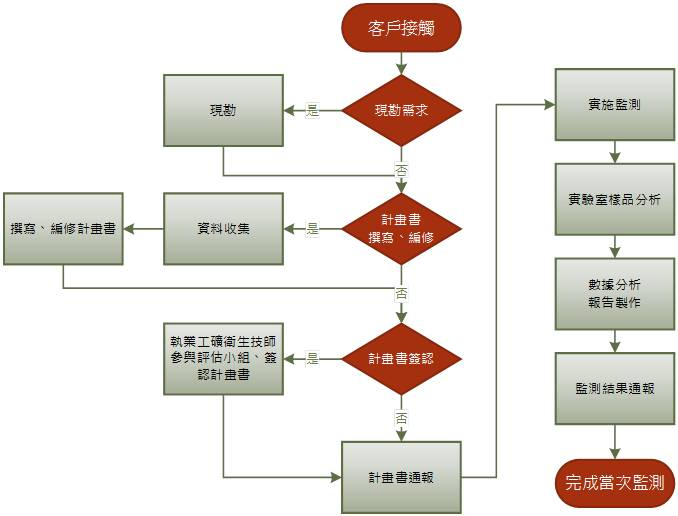

勞工作業環境監測
本公司服務內容
- 現勘：工礦衛生技師親臨事業單位說明現行法令對作業環境監測要求，並現勘協助判斷事業單位之需求。
- 作業環境監測計畫書撰寫：撰寫或編修作業環境監測計畫書。
- 作業環境監測計畫書技師簽認：執業之工礦衛生技師參與作業環境監測評估小組運作，並對作業環境監測計畫提出建議，並簽認。
- 執行監測：由工礦衛生技師親臨現場採樣、測定，同時提供專業說明。
- 樣品分析：由勞動部認可、TAF認證之專屬實驗室分析樣品。
- 數據分析：依客戶需求，提供監測結果之數據分析。分析之資料可包含歷年監測結果。分析內容包括描述性統計、推論性統計內容，如SEG之分布檢定、幾何平均數、幾何標準差、95百分位數值推估、趨勢圖、推估之對數常態濃度分布曲線圖。
- 監測報告：除標準報告外，提供包括監測規劃、監測結果之專業建議，並提供客製化之報告。
- 主管機關通報服務：提供主管理機關要求之作業環境監測計畫書事前通報、作業環境監測結果通報，降低事業單位通報之困擾。
服務流程圖
